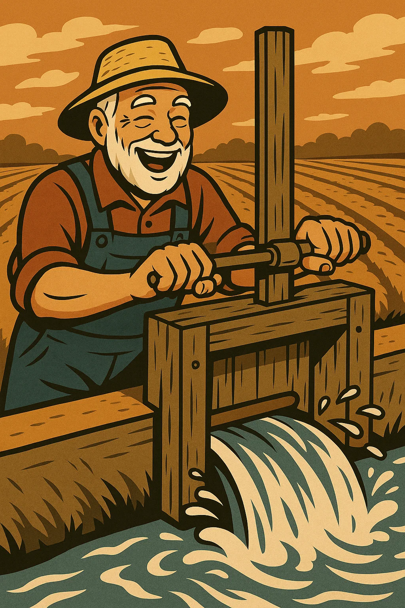
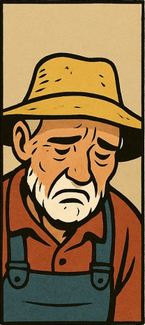

Gesucht: Ingenieur für antike Bewässerungssysteme
Male dein Bewässerungssystem und öffne die Schleuse. Ziel: Fülle die Gärten — so schnell wie möglich!
0
Punkte
60.0
Zeit
Zufluss q(t)
Punkte ziehen · Doppelklick auf leere Stelle: Punkt hinzufügen · Doppelklick auf Punkt: löschen
⏳ Initialisiere…


Höhere Auflösung sieht schöner aus, ist aber rechenintensiver — das simulierte Spiel läuft dann langsamer ab.